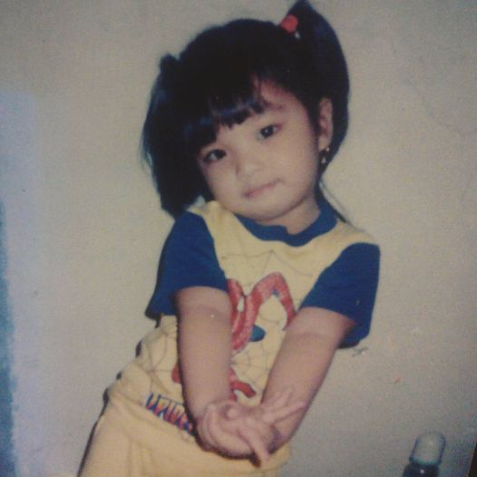
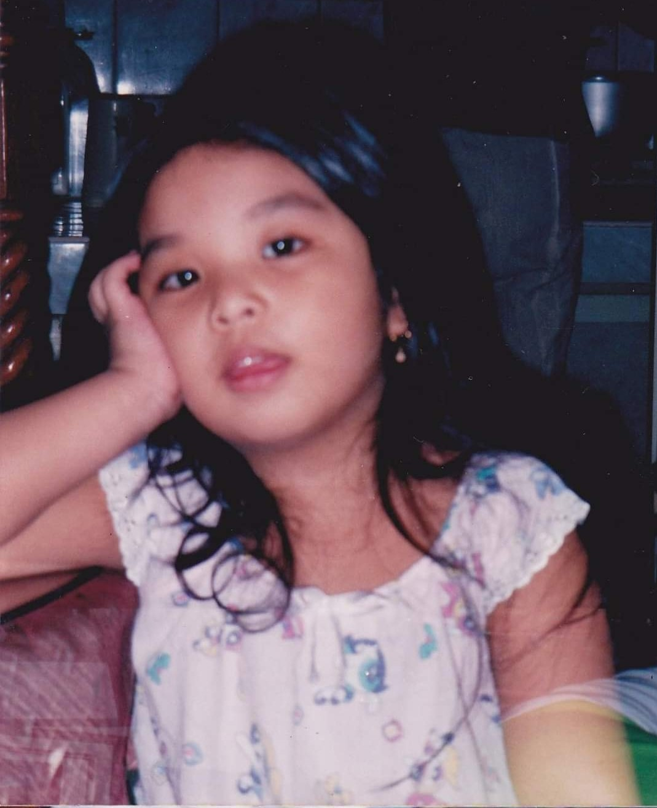
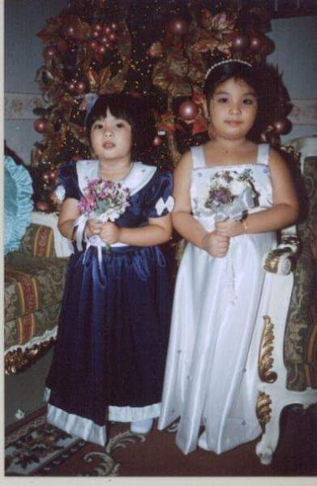
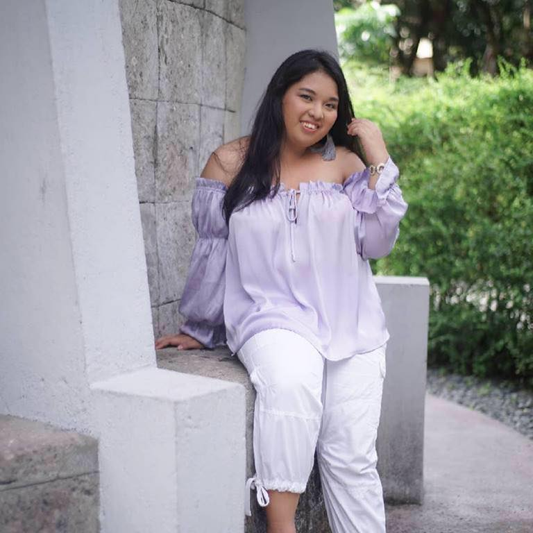
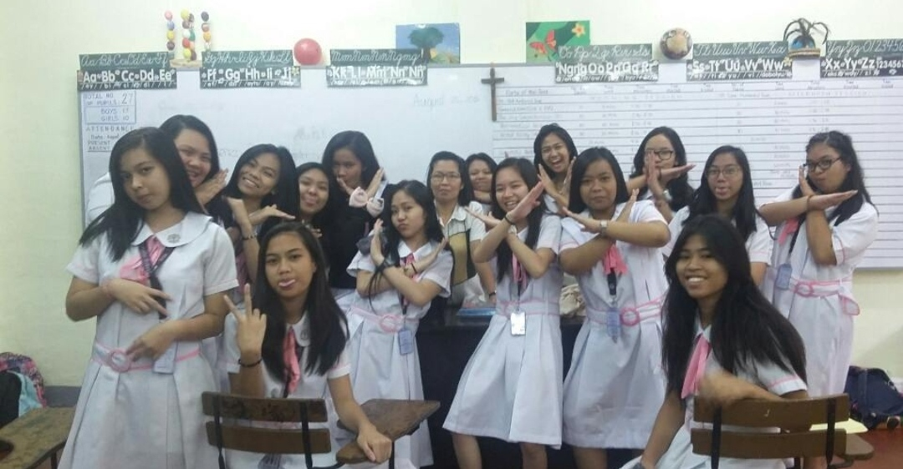
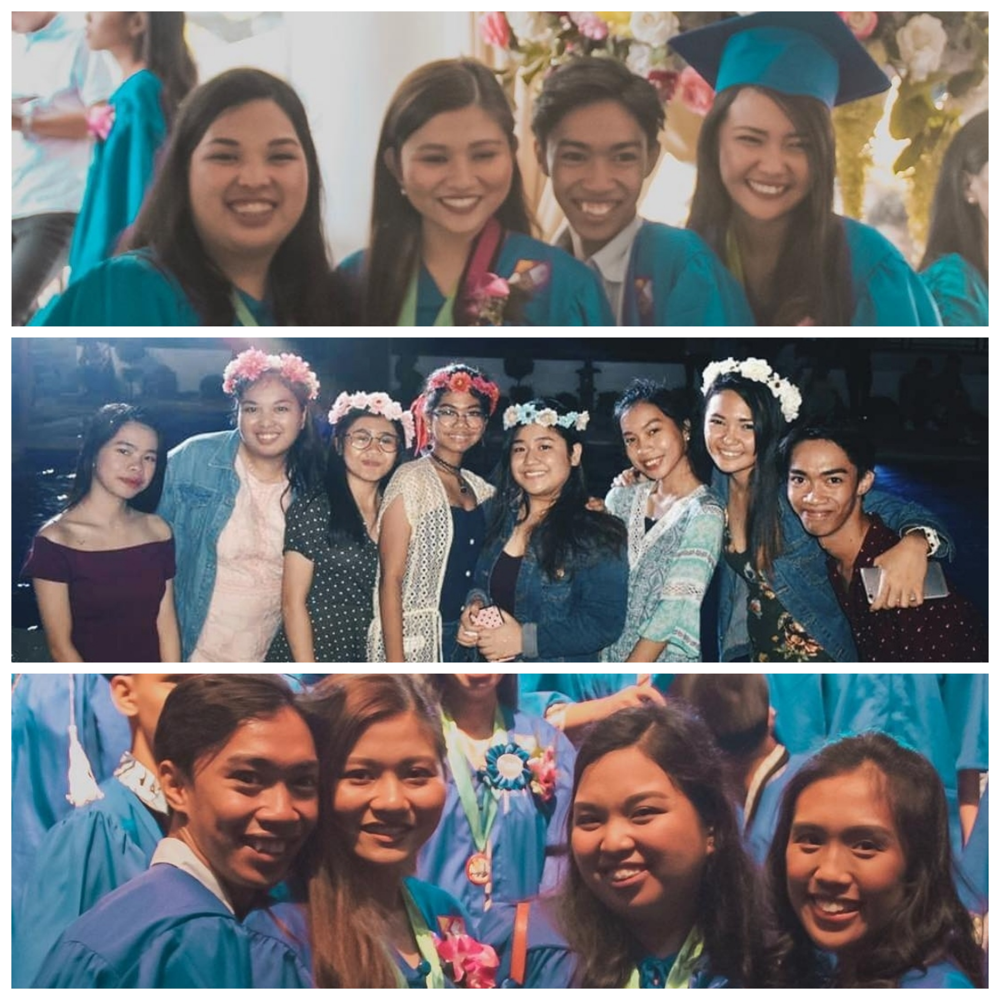
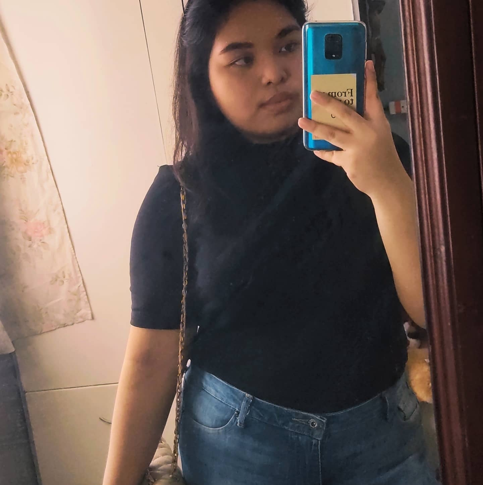
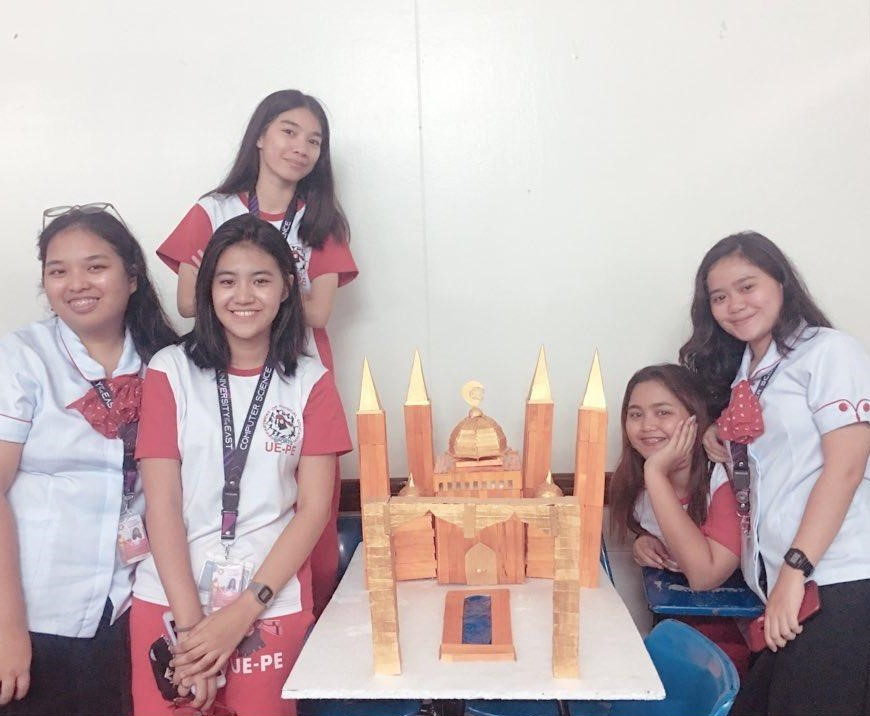

Ashley Writes Her Narrative
By: Jane Ashley Grabato
Childhood Years

Hi! 1I am Jane Ashley, my friends and family call me "Jaz" or "Ash/Ashley".
2Born on the 7th day of the last month of the 2nd millennium.
3I'm the eldest of two siblings, and also the eldest grandchild for both my mom and dad's side.
4As a kid, I was very lucky to grow up surrounded by mostly family.5Both of my parents were
working most of my childhood, and aside from a helper there will always be at least one relative there with us, may
it be one of my aunts or uncles, or either of my grandparents.

Have you watched the Pixar movie "Inside Out"? 1 In the movie,
they have this thing that they call the "Core Memories"; and those memories are the memories that were
built and remembers by the child.2 For me, my core memories are mostly watching cartoons, singing along
to Disney Movies when that iconic song comes, playing barbie, luto-lutuan, bamsak, patintero, langit-lupa,
being annoyed by my brother, and going to the mall every weekend. 3Another core memory I have is the week
of my grandfather's death. 4I was just 6 years old, barely knows anything about life. 5I think I
remember those times specifically because of the number of visitors we had every night. 6I'm thankful that
I've experienced being a kid in the streets. 7Playing 'til the sun disappears and having that "dungis"
phase. 8We used to have a garden in the back of our house, my dad had put up a hammock between the santol trees
and I would just hang there every afternoon. 9As a kid, I've also experience selling santol, home-made chocolates,
and home-made candles in front of our house. 10 My childhood friends, mostly consist of my cousins and neighbors,
really made those times memorable. 11We had a few years of falling out, probably because of going through different
stages, but now, I'm glad that we're slowly rebuilding the friendship we had before.
As for my early education, I entered Kindergarten when I was 5 years old. 1I studied in
Sta. Rosa Catholic School here in Pasig. 2I've spent most of my early life in that school, the best and the
worst (so far). It's nice to look back at those times and appreciate the people I've met in pre-school, who I've never
thought would still be my friends now.3 I wasn't an achiever in pre-school nor elementary, I was just enjoying and
doing what I need to do. 4My favorite parts of every school year are the programs-where we would compete with the
other sections and grade levels. 5Our batch was VERY competitive, and there will be times that the "competition" is
not healthy anymore.6But hey, whenever we look back to those days and realize how bad of a mentality we had, we can't
help but laugh because it brought so many good and bad memories.
Teenage Years

Like any other teenager, I thought that those years were going to be "Those Years".
1With all those coming-of-age films and shows that I saw as a kid, like High School Musical, Camp Rock, Sky High,
Victorious, etc; I thought What would I achieve in high school or my teenage years will determine my future. 2Well
that wasn't the case. 3It was as dramatic, definitely, YES!! the storyline of having competitions,
friendship falling-outs, cheesy graduations, and intense confrontations (that still makes me cringe to this day) made it
memorable.

When I entered high school, there I saw that I can do better as a student. 1I wasn't the smart
kid, it's my brother. 2And at a young age I've accepted that. 3 A big thank you to my parents that they didn't
compare us siblings; so I didn't need to feel like it was a competition, rather I heard it from other people. 4In grade 7,
where I realized that I can also be an Outstanding student. 5I was a different person in high school. 6 With
the help of my batchmates, I've found confidence. 7Probably because I was surrounded by the same people for 8-13 years.
8I joined the coordinating body, I was the secretary in 2015. 9Communication Arts were my favorite subject, both
English and Filipino, so I also joined the School Paper. 10I was fond of photography, that was one of my tasks in the
school paper, that is also why I always look forward when there's an upcoming event. 11I can bring my camera (with
permission from admin ofc) and just take shots of people on the campus having fun.

Senior High school was a big transition for me. 1I had to move to a new school because my previous
school doesn't offer SHS. 2Choosing a track was a hard decision for me because I never had a "Dream Profession".
2Growing up, I envy my friends who have a dream career, a doctor, architect, businessman... but me, I never really saw
myself in a particular field of work. 3I studied TVL-Programming at AMA Computer College in Pasig. 4I
honestly chose that track because of how in-demand computer course graduates are. 5Slowly I got to appreciate my track
when it could be frustrating sometimes but I'm getting the hang of it. 6During my stay in AMA is also where I got to
appreciate small things in life. 7Its a private school but they also have programs for public school graduates, In our
class, we were composed of different types of students from different walks of life. 8I've learned to appreciate more the
things I have.9At last the environment was new to me, new faces, new building, new teachers it was like having a fresh start.
10Finally, I was out of my comfort environment.
College Years

College was a big step. 1I knew that I want to experience studying outside the city. 2I tried
to look for schools that will not only have my course but also a school that we can afford and get quality education from.
3Ever since elementary the UAAP schools are already familiar to me. 4I used to watch UAAP games on
TV with my cousin, and thinking if I would be able to study in one of those schools. 5Before finally landing at
the University of the East, I also took the UPCAT and other college entrance exams. 6
Even though I did not get in the UP branches I chose, the whole entrance exam was already an experience itself.
7Processing the papers, commuting to Quezon City without any knowledge was tough but I'm glad I've experienced that.
8I also got to experience the whole process with my friends and my mom -who was very supportive
and waited for me to from registration to the actual examination.

I decided to go to UE not only because it's a UAAP member but also because of its influence. 1One of my aunts
was an alumnus of UE under the College of Business Administration. 2I also have friends who studied SHS in UE and will
continue their college there. 3It was somewhat comforting to know that I have friends in the university even we're not
from the same colleges. 4Like any other new student I was nervous in the first weeks. 5It was my first time
commuting outside of the city alone, experience Manila traffic and, being in a big school. 6I am an introvert with an
RBF (resting b*t*h face) so I had a difficult time socializing. 7My blockmates were approachable, although I did
not have a good first impression on most, especially the girls. 8It's weird to think that the people with who I didn't
have a good first impression are the people who I'm very close to today. 9Its funny when we look back on our first
encounters and remembering the feeling of "oh, I'm not going to get along with this person" to "I don't know
how I could survive each sem without these people". 10The best part of my freshman year was the out-campus hangouts,
that's what I miss during this whole quarantine. 11Our after school food trips, venting out our frustrations in acads,
having chismis, and just being in the presence of friends. 
12 Most of our hang-outs revolve around school-works
and food. 13Before the quarantine, we had a goal of eating in all Unli-wings restaurants around the university belt
area. 14 We're already in almost half of our college years. 15Yet our first day still feels like it was just
a few weeks back. 16Time is indeed fast, it's more noticeable now that we're just in our homes.
During freshman year, is also where I decided to just let myself go with the flow. 1I don't want to put any
pressure on myslef. 2If things go well, then great. 3But if things don't go the way I want to, then
accept, move on and be better. 4This is where I realized that the only competition I have is me. 5Not
putting pressure on myself is (so far) a great decision I've made. 6I've allowed myself not to meet my standards
and make mistakes. 7Sometimes I miss having recognitions, but the only recognition I need is from myself and
that's more important.
February 2021